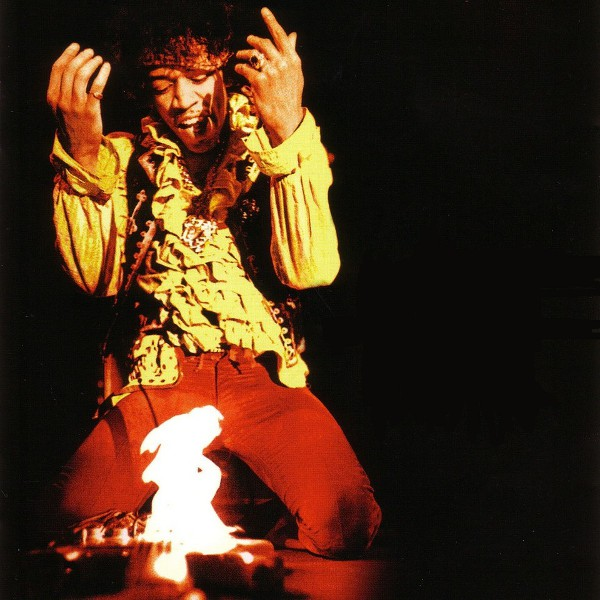

Welcome to Guitar Historia!
Hello, I'm Arjun Kahlon. Welcome to my site! I've been a guitar player for over a decade. It is a passion that I have had since I first heard Pink Floyd back in Middle School. Over the years, I've had hands on experience with a variety of guitar equiptment, including guitars, amps, pedals, pickups, strings, etc. I've made ths website to reveal my top 3 Electric Guitars and top 3 Electric Guitar Amplifiers. I will discuss the history of each instrument/amplifier as well as the famous musicians who used them. Please use the navigation menu to view my lists. If you have any concerns and/or questions, please contact me on the Contact tab. Thank you for spending your time here and enjoy!

